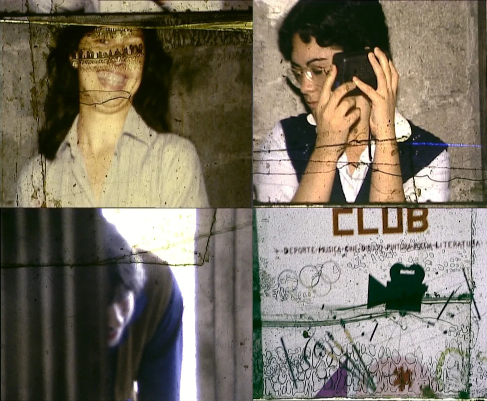
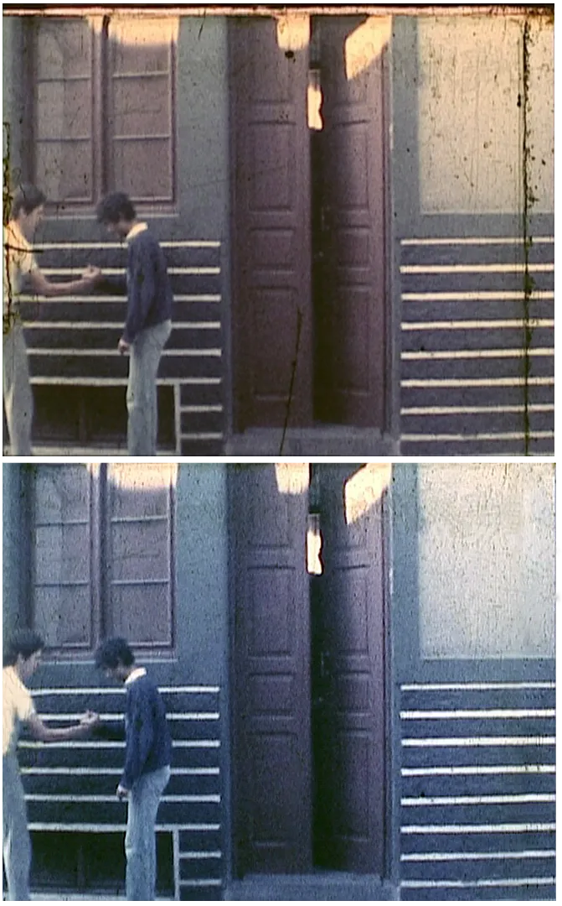
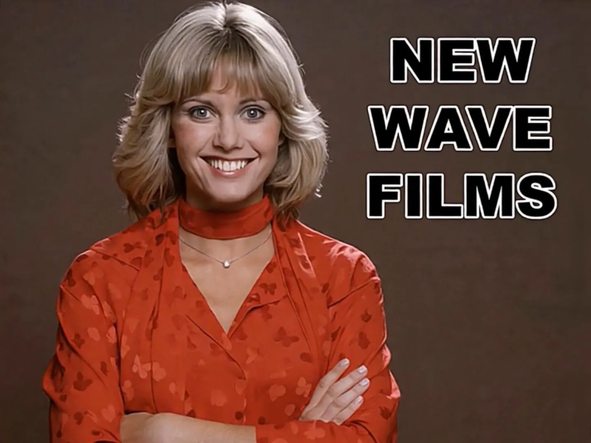
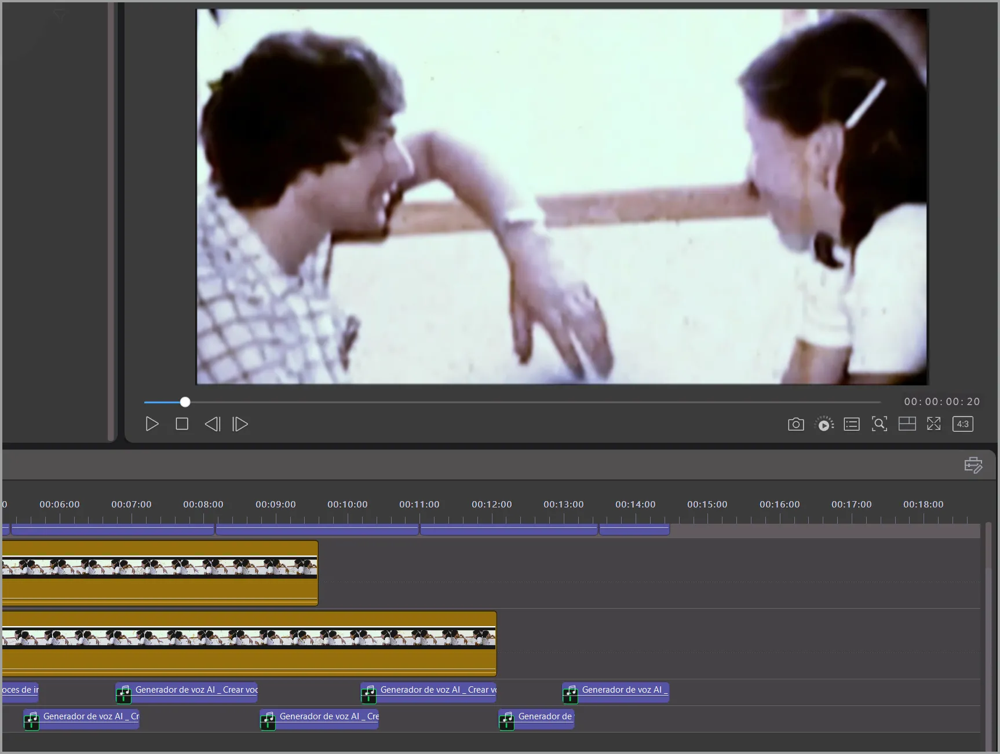

PROCESO DE RESTAURACIÓN
En 2011 se digitalizaron las películas originales que llevaban desde 1982 guardadas cuidadosamente, aunque no en las condiciones ideales de conservación de un material tan sensible. En algunos tramos, las cintas se habían terminado pegando entre sí, muchos empalmes se habían desprendido y, en varios casos, la antigua cinta adhesiva utilizada improvisadamente durante el montaje había dejado manchas y restos visibles sobre la propia película. A ello se sumaban rayaduras, polvo acumulado, pequeñas zonas con moho y numerosos defectos típicos del envejecimiento del Super 8.

Fotogramas en diferentes estados de deterioro
La recuperación ideal habría consistido en limpiar físicamente cada fotograma y posteriormente realizar un escaneado cinematográfico fotograma a fotograma, pero el coste de un proceso semejante resultaba completamente inasumible. Finalmente se optó por la digitalización en telecine realizada a partir del material original por la Filmoteca Canaria, que además permitió asegurar la correcta conservación física de las películas. A partir de aquella copia digital volcada a disco duro comenzó todo el proceso de mejora.
En "Ir por lana..." varias escenas interiores quedaron excesivamente oscuras debido a cerrar el diafragma en vez de abrirlo. En cambio, algunas secuencias exteriores de "¡Así se rueda una película!" aparecieron casi veladas por culpa de utilizar pilas demasiado gastadas en la cámara.
Corrección del cierre de diafragma del original
La restauración digital se realizó de forma completamente artesanal y sin medios profesionales. Aunque se utilizaron conocimientos previos de Photoshop adquiridos durante años de trabajo como diseñador gráfico, así como experiencia aficionada en programas de edición de vídeo, todo el proceso se llevó a cabo utilizando únicamente ordenadores portátiles domésticos de gama media y recursos personales.
Aun así fue posible corregir parcialmente muchos de estos problemas mediante ajustes de claridad, balance de blancos, contraste, enfoque y color. Sin embargo, el objetivo nunca fue eliminar completamente el aspecto original del Super 8, sino intentar aproximarse lo máximo posible a cómo aquellas películas debieron verse tras ser reveladas a comienzos de los años ochenta.

Fotograma antes y después de restaurar
Por ejemplo, en la escena final de "¡Así se rueda una película!", en la antigua sábana utilizada como pantalla de proyección se notaban demasiado las manchas y marcas oscuras que, ampliadas digitalmente, terminaban pareciendo casi el pelaje de un dálmata pelirrojo. Parte del trabajo consistió en limpiar manualmente muchos de aquellos defectos para devolverle un aspecto más uniforme y próximo al original. Lo mismo ocurrió con diversas paredes y fondos claros donde el paso del tiempo había dejado suciedad extremadamente visible.
La sábana utilizada como pantalla, más limpia
Otros problemas resultaron todavía más complejos. En algunos fragmentos aparecían saltos de imagen donde podía verse parcialmente el fotograma superior o inferior debido al deterioro de la película y al propio sistema de transferencia. Algunas de estas zonas tuvieron que ser reconstruidas manualmente para estabilizar la continuidad visual. También fue necesario eliminar manchas muy visibles sobre rostros y cuerpos de los actores, como ocurrió en varias escenas del personaje de Hulk en "¡Así se rueda una película!".
Uno de los trabajos más laboriosos de este proceso no fue estrictamente una reparación, sino la materialización de un efecto que en su momento no llegó a realizarse como estaba previsto. En "Una bestia sin bello" se había planteado la idea de que el personaje del genio estuviera envuelto por un aura verde y que pudiera lanzar rayos del mismo color hacia los excursionistas, provocando su caída.
La aureola verde y los rayos aplicados imagen a imagen
La intención era dibujar directamente estos efectos sobre la película imagen a imagen. Sin embargo, el reducido tamaño del formato Super 8 hacía prácticamente imposible trabajar con precisión suficiente sobre la copia física, por lo que finalmente esa idea quedó sin desarrollarse.
En 2015, con el material ya digitalizado, fue posible retomar aquella intención original y realizarla por fin utilizando Photoshop. De este modo, el aura y los rayos fueron dibujados y animados manualmente fotograma a fotograma sobre la imagen digital.

Nuestra querida Olivia, brindándose a presentar uno de los cortos, animada, con todo el respeto y cariño, a partir de una foto por medio de IA.
Así, este trabajo no solo puede entenderse como restauración, sino también como la realización tardía de una decisión creativa que en su momento no pudo materializarse por limitaciones técnicas del propio formato.
A partir del material digitalizado, el proceso de mejora dio un paso más allá de la simple corrección de imagen y entró en el terreno de la reconstrucción de escenas, planos e ideas que en su momento no llegaron a completarse o que se habían perdido parcialmente con el paso del tiempo.

Reconstrucción y sincronización del nuevo apartado sonoro
Como última fase del proceso, se creó desde cero un nuevo apartado sonoro mediante voces, efectos y sincronización precisa.
Aunque en ocasiones fue una labor meticulosa y monótona, mayoritariamente, todo lo hecho fresultó enormemente creativa y gratificante. Recuperar este material del olvido, restaurarlo y compartirlo décadas después mediante su almacenamiento digital y la creación de esta pequeña web/museo ha permitido conservar una parte de aquella memoria audiovisual rodada en Super 8.